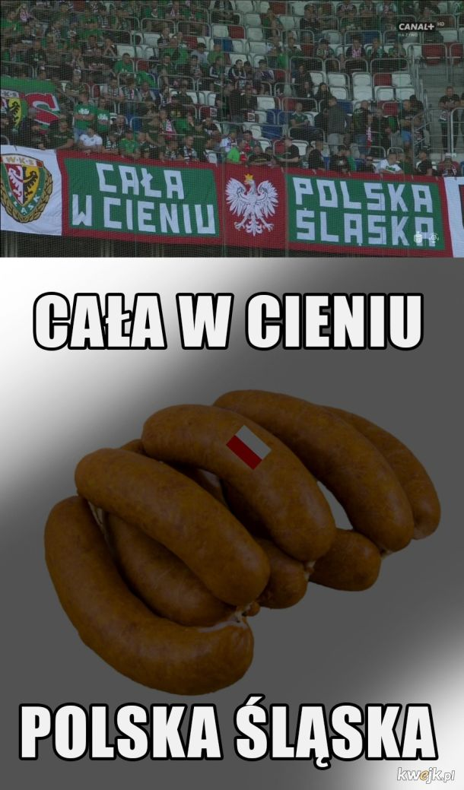

"Panie dobry jak chleb"
Ah, niedobry ten mecz
Bo przejebało znów Huwdu do zera
Tak trzecia liga nas sponiewiera
Porządnie nas sponiewiera
Gdy robotnicy klub nasz zakładali
To każdy mecz porządnie przejebali
Tylko walkower temu mógł zapobiec
Taki sam skutek, lecz trochę mniej wstydu
Ah, niedobry ten mecz...
Napleton wrogiem naszym był od zawsze
Zero szacunku, pluj na tych skurwieli
Gdy pały przyjdą by zepsuć zabawę
Jebać policję, a Napleton potem
Ah, niedobry ten mecz...
do melodii "Panie dobry jak chleb"

Jak szczęśliwa Polska cała
Cała w cieniu polska Śląska
Grill rozpaaaaalaj, przyszła wiosna
Śląska rozmrożona prawie
Tyyyyy nacinaj, ja doprawię
Węgiel kostka
Maśla mrągowska
Majo kielecki
Kiebła śłąska